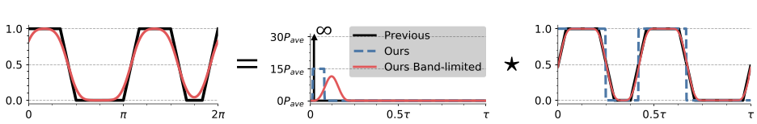

Practical Coding Function Design
for Time-of-Flight Imaging
IEEE CVPR 2019
- 1University of Wisconsin-Madison

Overview
The depth resolution of a continuous-wave time-of-flight (CW-ToF) imaging system is determined by its coding functions. Recently, there has been growing interest in the design of new high-performance CW-ToF coding functions. However, these functions are typically designed in a hardware agnostic manner, i.e., without considering the practical device limitations, such as bandwidth, source power, digital (binary) function generation. Therefore, despite theoretical improvements, practical implementation of these functions remains a challenge. We present a constrained optimization approach for designing practical coding functions that adhere to hardware constraints. The optimization problem is non-convex with a large search space and no known globally optimal solutions. To make the problem tractable, we design an iterative, alternating least-squares algorithm, along with convex relaxation of the constraints. Using this approach, we design high-performance coding functions that can be implemented on existing hardware with minimal modifications. We demonstrate the performance benefits of the resulting functions via extensive simulations and a hardware prototype
A Coding Theory of Time-of-Flight Imaging (ICCP 2020)
Poster presentation at ICCP 2020 of our coding function design work. Additional information on the different related publications can be found here.